Аннотации типов и документация кода · МДК.01.01 · разработка программных модулей
Глава 4.3
Проверка типов:
Pylance и mypy по шагам
В этой главе по шагам разобраны две программы, которые сверяют код с аннотациями до запуска: Pylance в редакторе VS Code и mypy в терминале. Для каждой показано, как её включить, где увидеть ошибку и как прочитать сообщение. Все шаги выполняются на втором архиве проекта, где аннотации уже расставлены, и на одном файле с двумя неверными вызовами.
- Категория
- Инструменты
- Уровень
- Начальный
- Опирается на
- Главы 4.1 и 4.2
- Зачем это знать
- Находить неверные вызовы до запуска программы
§1Что такое проверка типов
Проверка типов — чтение кода программой, которая сверяет каждый вызов, присваивание и возврат значения с аннотациями. Сам код при этом не запускается: программа проверки работает с текстом файлов. Если в функцию format_title(text: str, ...) передано число, она сообщит об этом и назовёт строку, хотя до выполнения этой строки дело не дошло.
В курсе используются две такие программы. Правила сверки у них почти одинаковые, различаются место и момент работы.
| Программа | Где работает | Когда проверяет | Что проверяет |
|---|---|---|---|
| Pylance | Внутри VS Code, ставится вместе с расширением Python | Во время набора, после каждого изменения | Открытые файлы |
| mypy | В терминале, ставится через pip | По команде: перед коммитом и в проверках запроса на слияние | Указанный файл, папку или весь пакет |
Ассоциация: проверка орфографии
Текстовый редактор подчёркивает слово с ошибкой сразу при наборе. Перед отправкой большого документа запускают проверку всего текста, и она выдаёт полный список ошибок по страницам.
Pylance подчёркивает неверный вызов при наборе, в открытом файле. mypy по команде проверяет весь проект и печатает список ошибок с именами файлов и номерами строк.
Где не совпадаетПроверка орфографии сверяет слова со словарём. Проверка типов сверяет код с аннотациями, которые записаны в этом же проекте: где аннотаций нет, сверять не с чем.
§2Подготовка
Для работы нужен второй архив проекта — с аннотациями. Если он ещё не подготовлен по шагам из главы 4.1, скачайте и подготовьте его: распакуйте, откройте папку в VS Code, создайте окружение .venv и установите зависимости из requirements.txt.
В корне проекта создайте файл proba.py — рядом с main.py. В нём два вызова функций проекта с аргументами не того типа:
from app.utils.formatter import format_kopeks, format_title title = format_title(40) price = format_kopeks("1250")
Подписи обеих функций — в модуле app/utils/formatter.py: format_title(text: str, width: int = 40) -> str и format_kopeks(kopeks: int) -> str. В строке 3 вместо текста заголовка передано число, в строке 4 вместо числа копеек — строка. Обе ошибки и предстоит найти — сначала в редакторе, затем в терминале.
§3Pylance: проверка в редакторе
Pylance — расширение VS Code, которое разбирает код на Python: строит подсказки, автодополнение и переходы к определениям, а при включённой проверке подчёркивает ошибки типов. Ниже восемь шагов — от проверки расширения до исправленного файла.
Убедитесь, что стоит Pylance
Откройте панель расширений: CtrlCmd + Shift + X, или значок из четырёх квадратов на левой полосе. Введите в поле поиска @installed — останутся только установленные расширения.
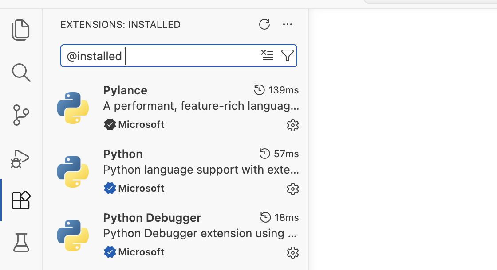
ms-python.python и нажмите Install.Выберите интерпретатор из окружения проекта
Откройте палитру команд: CtrlCmd + Shift + P. Наберите Python: Select Interpreter и нажмите Enter.
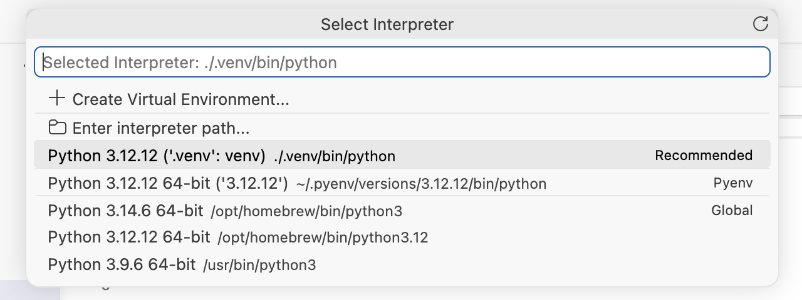
'.venv': venv — интерпретатор из окружения проекта, VS Code помечает его словом Recommended. Остальные строки — интерпретаторы, установленные на компьютере; их список у вас будет другим. После выбора в правом нижнем углу окна появится надпись .venv (3.12.12).Этот шаг нужен, чтобы Pylance искал импортируемые модули там же, где их найдёт программа при запуске. С другим интерпретатором он не увидит пакеты из .venv и подчеркнёт строки import как ошибочные.
Откройте proba.py и посмотрите на него без проверки
Откройте proba.py из проводника. В обоих вызовах типы не совпадают с аннотациями, но подчёркиваний нет.
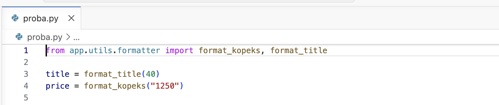
off. В нём Pylance использует аннотации для подсказок и автодополнения, а ошибки типов не показывает. Подчёркиваются только ошибки синтаксиса, ненайденные модули и неизвестные имена.Включите режим basic в настройках проекта
Откройте настройки: CtrlCmd + ,. Вверху окна две вкладки — User и Workspace. Выберите Workspace: так настройка запишется в папку проекта и будет действовать у каждого, кто откроет этот проект. Вкладка User меняет настройки редактора для всех проектов на этом компьютере. В поле поиска введите python.analysis.typeCheckingMode.
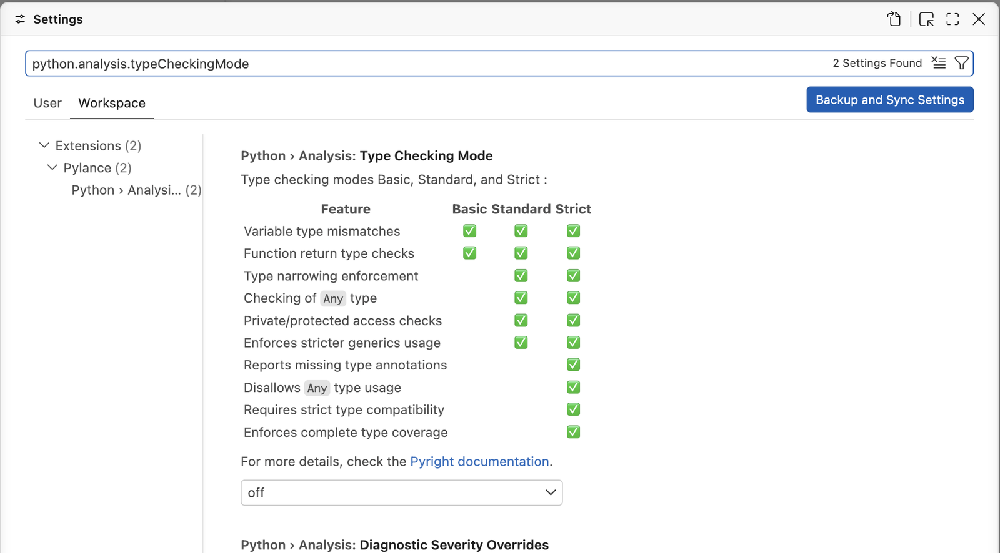
off.Щёлкните по полю со значением off и выберите basic.
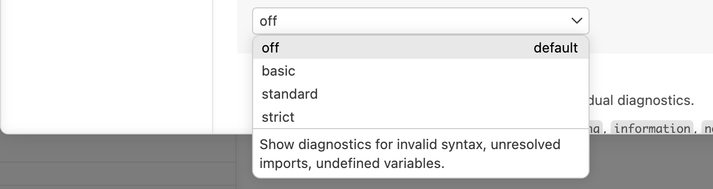
off — значение по умолчанию. basic — режим курса: неверные аргументы, присваивания, возвраты и обращения к значению, которое может быть None. standard добавляет несколько правил. strict требует аннотаций везде и на учебном проекте сразу даёт много замечаний.VS Code сам создаст файл .vscode/settings.json, если его не было, и допишет в него строку. В проекте темы такой файл уже есть, и строка добавится в конец:
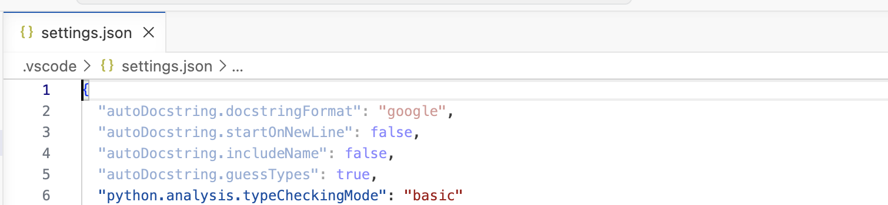
"python.analysis.typeCheckingMode": "basic". Строки выше относятся к генератору описаний из главы 4.10; пока расширение autoDocstring не установлено, VS Code показывает их бледным цветом. Ту же строку можно дописать в файл руками — результат одинаковый.Посмотрите на подчёркивания
Вернитесь на вкладку proba.py. Через секунду-две после смены режима Pylance проверит файл заново.
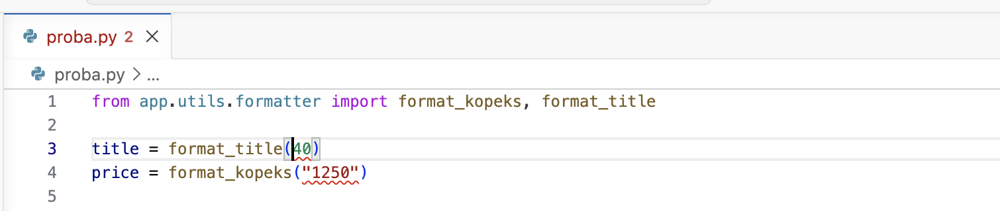
40 в строке 3 и "1250" в строке 4. На вкладке после имени файла — цифра 2: столько ошибок в файле. Та же цифра появляется у имени файла в проводнике.Прочитайте сообщение
Наведите указатель на подчёркнутое 40 или поставьте на него курсор и нажмите CtrlCmd + K, затем CtrlCmd + I.
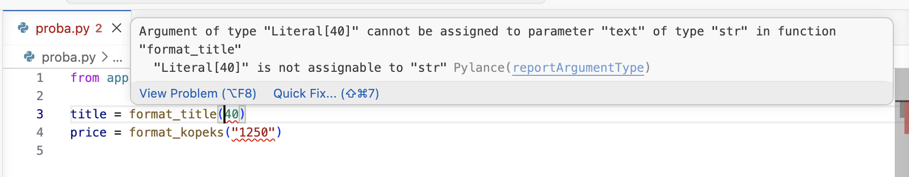
Сообщение читается по частям:
Argument of type "Literal[40]"— передан аргумент типаLiteral[40]. Так Pylance называет тип конкретного значения: «ровно число40». Это частный случайint.cannot be assigned to parameter "text" of type "str"— нельзя передать в параметрtext, который ожидает строку;in function "format_title"— функция, которую вызывали;"Literal[40]" is not assignable to "str"— короткая причина: число не подходит туда, где ждут строку;Pylance(reportArgumentType)— кто сообщил и по какому правилу. По имени правила его находят в документации.
Ниже сообщения две ссылки. View Problem раскрывает описание прямо в тексте файла, Quick Fix предлагает готовые исправления, если они есть. Для ошибок типов готового исправления обычно нет: какое значение нужно передать, решает разработчик.
Откройте панель Problems
Все сообщения открытых файлов собраны в панели Problems: CtrlCmd + Shift + M, или щелчок по счётчику ошибок в левом нижнем углу окна.
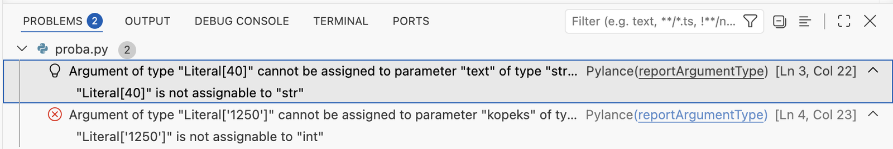
proba.py их две. В каждой строке — сообщение, источник Pylance(reportArgumentType) и место: [Ln 3, Col 22] — строка 3, столбец 22. Щелчок по строке переводит курсор к месту ошибки.Исправьте вызовы
Передайте значения тех типов, которые записаны в аннотациях: текст заголовка и целое число копеек.
from app.utils.formatter import format_kopeks, format_title title = format_title(" Итог ") price = format_kopeks(125000)
Подчёркивания пропадут, панель Problems опустеет, счётчик в левом нижнем углу покажет 0. Файл проверен, хотя ни разу не запускался.
§4mypy: проверка в терминале
mypy — программа проверки типов для Python, которая запускается командой в терминале. В отличие от Pylance, она проверяет и те файлы, которые сейчас не открыты, и печатает один отчёт на весь проект. Поэтому в проверках запроса на слияние запускают её. В проекте mypy перечислен в requirements.txt и уже установлен в .venv.
Для опыта верните в proba.py оба неверных вызова — format_title(40) и format_kopeks("1250").
Откройте терминал и проверьте, что mypy установлен
Терминал редактора открывается сочетанием Ctrl + ` (на всех системах) или через меню Terminal → New Terminal. Он запускается в папке проекта. Выполните:
$ .venv/bin/mypy --version> .venv\Scripts\mypy --version
Ответ — mypy 1.15.0 (compiled: yes). Если вместо него сообщение «нет такого файла», зависимости не установлены: выполните установку из requirements.txt, как в главе 4.1.
Проверьте файл
Укажите после mypy имя файла:
$ .venv/bin/mypy proba.py> .venv\Scripts\mypy proba.py
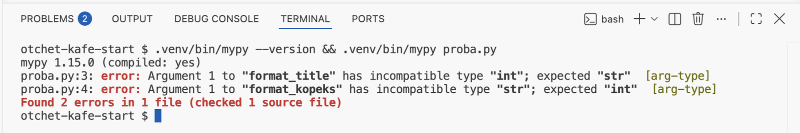
&&. Первая строка ответа — версия. Дальше по строке на каждую ошибку: proba.py:3 и proba.py:4 — файл и номер строки. Последняя строка — итог: Found 2 errors in 1 file (checked 1 source file), найдено две ошибки в одном файле, проверен один файл.Программа при этом не запускалась: mypy только прочитал proba.py и модуль formatter.py, из которого импортированы функции.
Перейдите к месту ошибки
Имя файла с номером строки в выводе — ссылка. Удерживайте CtrlCmd и щёлкните по proba.py:3: VS Code откроет файл и поставит курсор в строку 3. В длинном отчёте так не приходится искать файл в проводнике и строку по номеру.
Исправьте и запустите проверку снова
Замените вызовы на исправленные — как в последнем шаге части про Pylance, сохраните файл (CtrlCmd + S) и повторите команду. Стрелка ↑ в терминале возвращает предыдущую команду, набирать её заново не нужно.
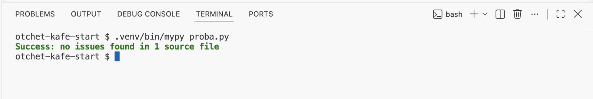
Success: no issues found in 1 source file — несовпадений с аннотациями нет, проверен один файл. mypy читает файл с диска, поэтому перед запуском его нужно сохранить. Pylance проверяет и несохранённый текст.Проверьте весь пакет
Вместо имени файла можно указать папку. mypy пройдёт по всем файлам .py в ней и во вложенных папках:
$ .venv/bin/mypy app> .venv\Scripts\mypy app
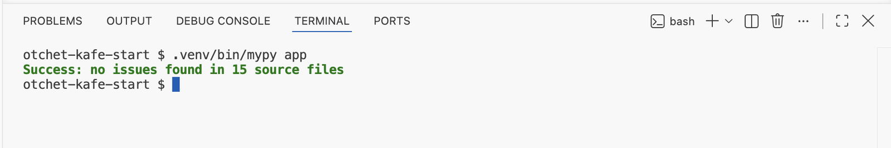
checked 15 source files — проверено пятнадцать файлов: десять модулей и пять файлов __init__.py. Ошибок нет: аннотации во втором архиве расставлены и вызовы им соответствуют.Команда mypy app запускается перед коммитом и в проверках репозитория. Файл proba.py в пакет app не входит; после опытов его удаляют.
§5Как читать строку вывода mypy
Каждая ошибка в отчёте mypy занимает одну строку, и строение у всех строк одинаковое. Разберём первую строку из шага 2:
error — ошибка, note — пояснение к ошибке или ответ на запрос типа. Сообщение называет, что не совпало. Код в квадратных скобках — имя правила: по нему ошибку находят в документации mypy.Целиком сообщение звучит так: Argument 1 to "format_title" has incompatible type "int"; expected "str" — «первый аргумент функции format_title имеет несовместимый тип int; ожидался str». Почти все сообщения mypy построены по одной схеме: что за место (аргумент, присваивание, возврат), какой тип пришёл и какой ожидался. Коды, которые встречаются чаще других:
| Код mypy | Правило Pylance | Что не так | Пример |
|---|---|---|---|
arg-type | reportArgumentType | Аргумент не того типа | format_title(40) |
assignment | reportAssignmentType | Переменной с аннотацией присвоено значение не того типа | first: str = grades[0], где grades: list[int] |
return-value | reportReturnType | Функция возвращает не тот тип, что записан после стрелки | -> str, а в теле return kopeks / 100 |
return | reportReturnType | Есть путь выполнения без return | return только внутри if |
union-attr | reportOptionalMemberAccess | Обращение к атрибуту значения, которое может быть None | found.kopeks без проверки на None |
attr-defined | reportAttributeAccessIssue | У объекта нет такого атрибута | order.kopek вместо order.kopeks |
no-untyped-def | — в режиме basic | У функции нет аннотаций | любая функция первого архива |
Код no-untyped-def разобран ниже, в §7. Остальные коды встречаются в примерах главы 4.4 вместе с настоящим выводом mypy.
§6Одна ошибка в двух программах
Pylance и mypy нашли в proba.py одни и те же две ошибки, но описали их по-разному. Сравнение для строки 3:
| Pylance | mypy | |
|---|---|---|
| Где видно | Подчёркивание, всплывающее сообщение, панель Problems | Строка в терминале |
| Тип переданного значения | Literal[40] — конкретное число | int — целое число |
| Как назван параметр | По имени: "text" | По номеру: Argument 1 |
| Имя правила | reportArgumentType | arg-type |
| Место | [Ln 3, Col 22] — строка и столбец | proba.py:3 — файл и строка |
В большинстве случаев две программы согласны. Расхождения бывают в пограничных случаях: например, пустой словарь totals = {} без аннотации mypy считает ошибкой, а Pylance в режиме basic — нет. Когда результаты расходятся, в курсе решает mypy: его команда стоит в проверках перед сдачей работы.
§7Функции без аннотаций
По умолчанию mypy пропускает функции, у которых нет ни одной аннотации: их тела он не проверяет и об отсутствии типов не сообщает. Проект совсем без аннотаций прошёл бы проверку с ответом Success, хотя сверять в нём нечего. Чтобы такие функции считались ошибкой, в файле pyproject.toml включают параметр disallow_untyped_defs. В проекте темы он уже включён:
[tool.mypy] # Функция без аннотаций — ошибка: так проверка находит места, # где типы забыли указать. disallow_untyped_defs = true
mypy читает этот файл сам, если запускать его из корня проекта. Откройте первый архив — без аннотаций — и выполните там ту же команду mypy app:
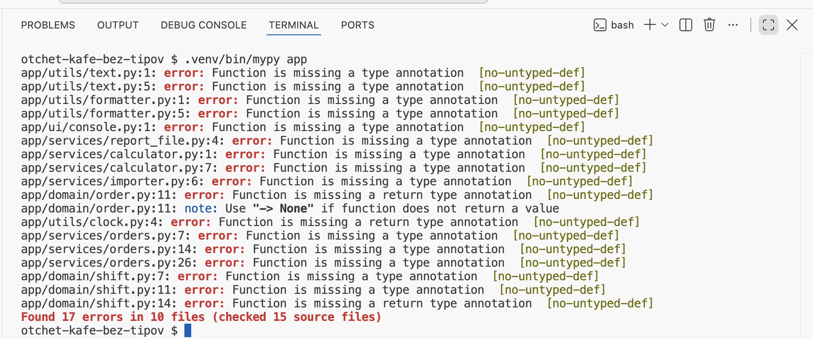
no-untyped-def. Сообщение Function is missing a type annotation означает, что аннотаций нет совсем. Function is missing a return type annotation пишется у функций, у которых нет параметров, кроме self: им не хватает только типа результата. Строка note у order.py:11 подсказывает решение: Use "-> None" if function does not return a value. Итог — Found 17 errors in 10 files.Этот перечень — план работы для практики в главе 4.5: когда все семнадцать функций получат аннотации, ответ сменится на Success. Pylance в режиме basic функции без аннотаций не подчёркивает — это правило включено только в режиме strict, как видно в таблице на шаге 4.
§8Какой тип видит проверка
Аннотации пишут не везде: у локальных переменных тип выводится из присвоенного значения. Посмотреть, какой тип вывела проверка, можно двумя способами.
В редакторе — наведением указателя на имя переменной. В файле ниже переменной присвоен результат grade_bounds, аннотации у переменной нет:
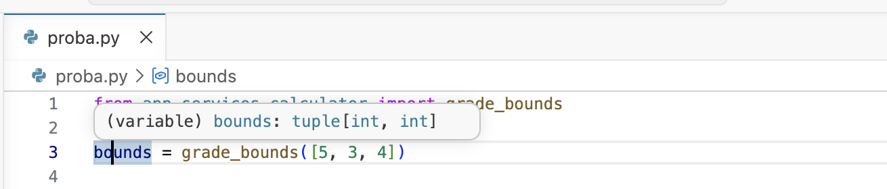
(variable) bounds: tuple[int, int] — Pylance взял тип из аннотации результата grade_bounds(...) -> tuple[int, int].В mypy — временной строкой reveal_type(...). Импортировать её не нужно: mypy узнаёт это имя сам и печатает тип выражения в скобках строкой с уровнем note.
from app.services.calculator import grade_bounds bounds = grade_bounds([5, 3, 4]) reveal_type(bounds)
proba.py:4: note: Revealed type is "tuple[builtins.int, builtins.int]" Success: no issues found in 1 source file
Приставка builtins. — полное имя встроенного типа: builtins.int и есть int. При запуске программы функции reveal_type нет, и строка завершится ошибкой NameError, поэтому после просмотра её удаляют. Этим приёмом пользуются в главе 4.4: в примерах он показывает, как проверка понимает тип внутри условий и циклов.
§9Чего проверка не находит
Проверка работает с текстом программы. Данные, которые появятся при запуске, ей недоступны. В load_orders сумма читается из файла смены вызовом int(row["kopeks"]). Для проверки всё верно: int(...) возвращает целое число. Если же в файле окажется строка сто, программа завершится ошибкой ValueError, и проверка об этом не предупредит.
| Находит проверка типов | Не находит проверка типов |
|---|---|
| Вызов с аргументом не того типа | Неверные данные в файле или в ответе сервера |
Обращение к атрибуту значения, которое может быть None | Ошибку в расчёте: + вместо - между числами |
| Возврат значения не того типа | Нарушение ограничений вроде «оценка от 2 до 5» |
| Опечатку в имени атрибута | Всё, что помечено типом Any |
Правую колонку закрывают тесты и проверки данных внутри функций. Проверка типов находит один класс ошибок — несовпадение типов — сразу во всём проекте.
Бывает, что замечание верно по форме, но в конкретной строке исправлять нечего: например, в тесте намеренно передаётся неверный тип, чтобы проверить сообщение об ошибке. Такое замечание подавляют комментарием # type: ignore с кодом правила в квадратных скобках:
format_title(40) # type: ignore[arg-type]
Код в скобках обязателен: без него подавляются все замечания на строке, в том числе те, что появятся после будущих правок. В работах курса подавления не используются: каждое замечание исправляется аннотацией или кодом.
§10Проверьте себя
Pylance установлен, а неверный вызов не подчёркнут. Что проверить?
Режим проверки: по умолчанию он off. В настройках проекта нужно выбрать basic — в файле .vscode/settings.json появится строка "python.analysis.typeCheckingMode": "basic". Если подчёркнуты строки import, выбран не тот интерпретатор: нужен .venv.
Чем отличается настройка на вкладке Workspace от настройки на вкладке User?
Workspace записывает настройку в .vscode/settings.json внутри проекта: она действует только в нём и попадает в репозиторий вместе с кодом. User меняет настройки редактора на этом компьютере для всех проектов.
Что означает строка proba.py:4: error: … [arg-type]?
В файле proba.py на строке 4 ошибка: аргумент не того типа. arg-type — код правила, по которому ошибку находят в документации.
Файл исправлен, Pylance подчёркиваний не показывает, а mypy по-прежнему сообщает об ошибке. Почему?
Файл не сохранён. Pylance проверяет текст в редакторе, mypy — файл на диске.
Проект без единой аннотации проходит mypy app без ошибок. Почему и как это исправить?
По умолчанию mypy не проверяет функции без аннотаций. Параметр disallow_untyped_defs = true в разделе [tool.mypy] файла pyproject.toml превращает каждую такую функцию в ошибку no-untyped-def.
Проверка типов прошла. Может ли программа завершиться ошибкой при запуске?
Может. Данные из файлов и сети проверке недоступны, расчёты и ограничения значений она не проверяет, а значения типа Any пропускает. Такие ошибки находят тесты и проверки внутри функций.
§11Шпаргалка по главе
Settings → Workspace
"python.analysis.typeCheckingMode": "basic"
подчёркивание и наведение
панель Problems: Ctrl+Shift+M
.venv/bin/mypy proba.py
.venv/bin/mypy app
файл:строка: error: сообщение [код]
[tool.mypy]
disallow_untyped_defs = true
наведение на имя — Pylance
reveal_type(x) — mypy
Итог главы
Pylance проверяет открытые файлы во время набора, когда в настройках проекта выбран режим basic; ошибки видны подчёркиванием, во всплывающем сообщении и в панели Problems. mypy проверяет указанный файл или весь пакет по команде в терминале и печатает по строке на ошибку: файл, номер строки, сообщение «пришло / ожидалось» и код правила. Параметр disallow_untyped_defs заставляет mypy сообщать о функциях без аннотаций — на первом архиве их семнадцать. Тип, который вывела проверка, показывают наведение в редакторе и reveal_type в mypy.
- Запуск, настройка и коды ошибок — документация mypy, разделы Config file и Error codes; disallow_untyped_defs.
- Режимы проверки Pylance — справочник параметров Python в VS Code, параметр
python.analysis.typeCheckingMode; имена правил — документация Pyright, Configuration. - Выбор интерпретатора — VS Code, Python environments.
- Выводы получены запуском на архивах проекта темы, mypy
1.15; кадры сняты в VS Code1.138с расширением Pylance2026.4.